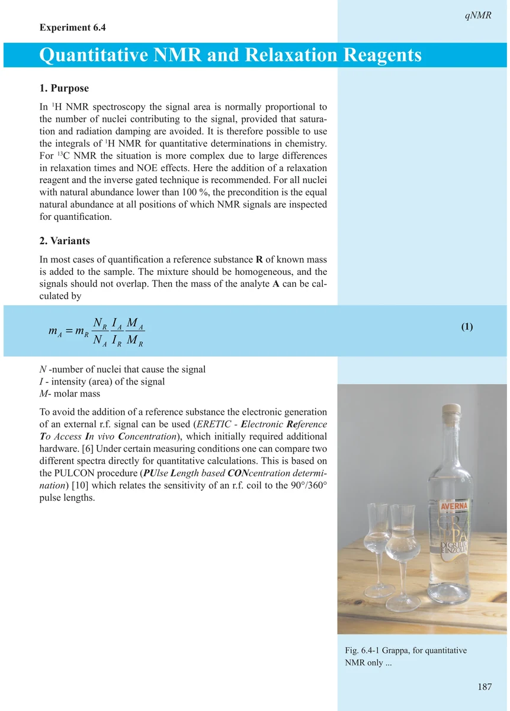
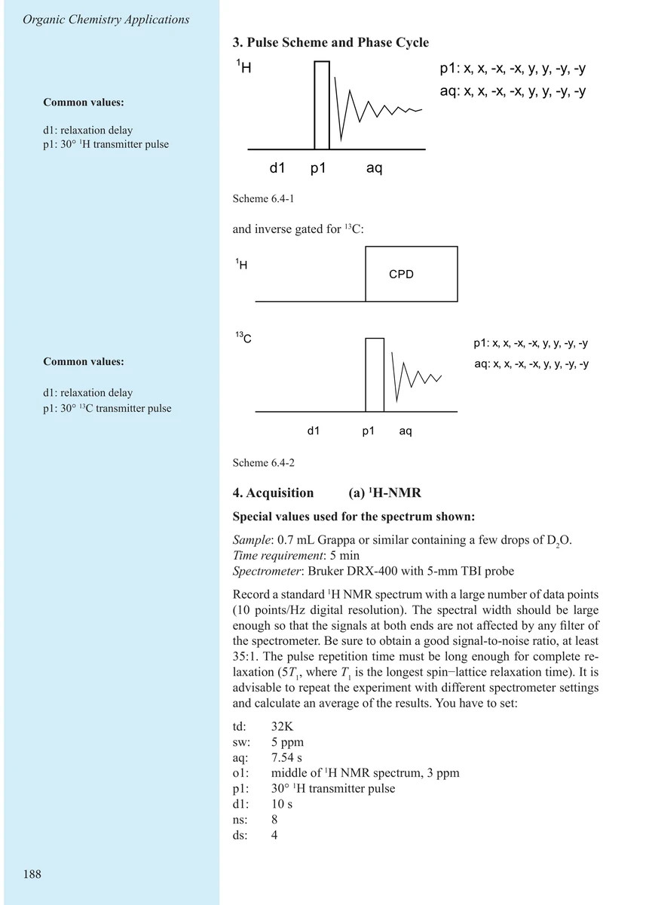
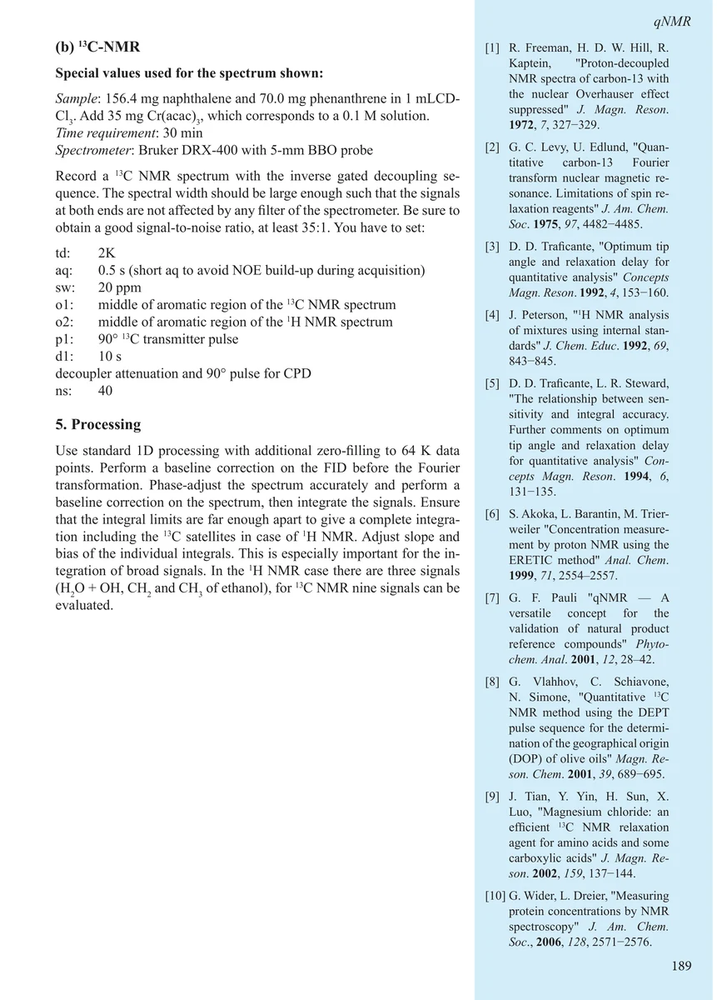
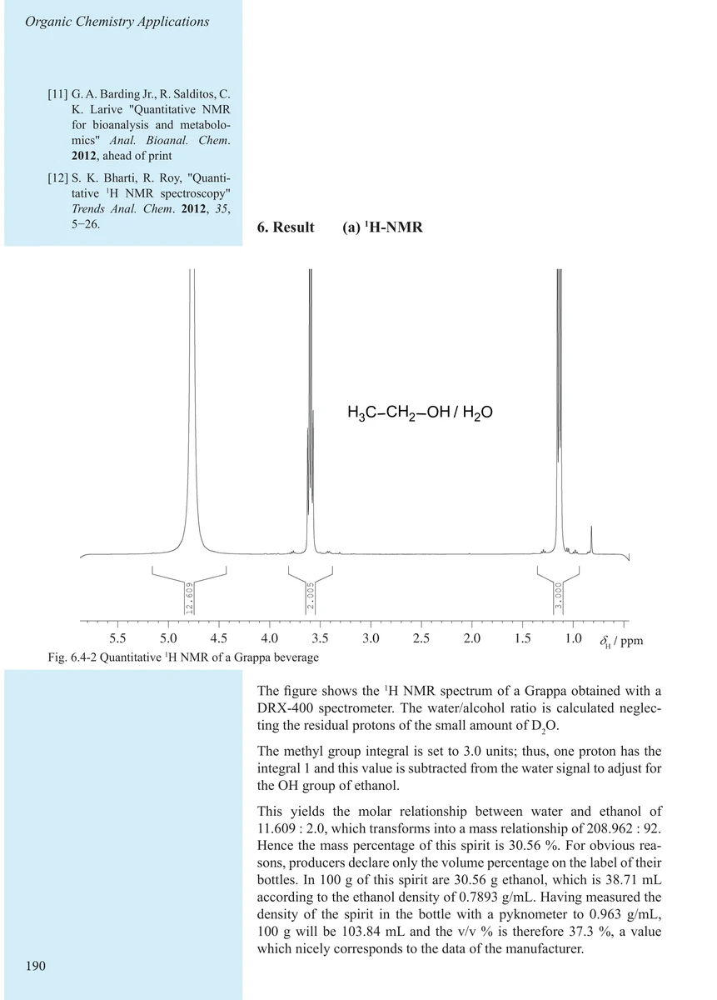
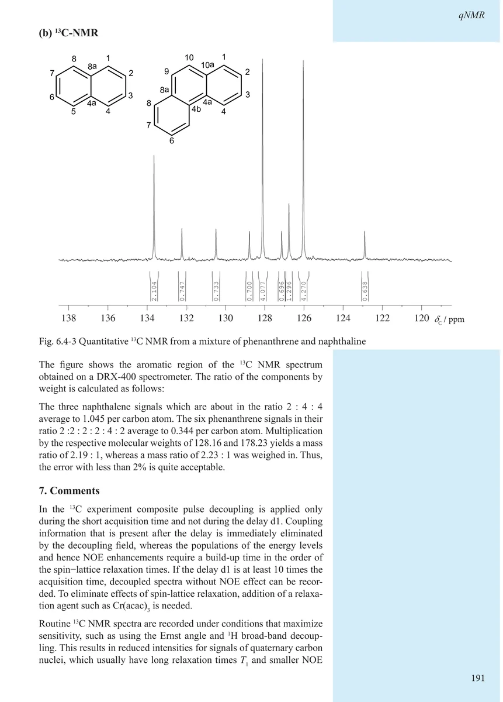
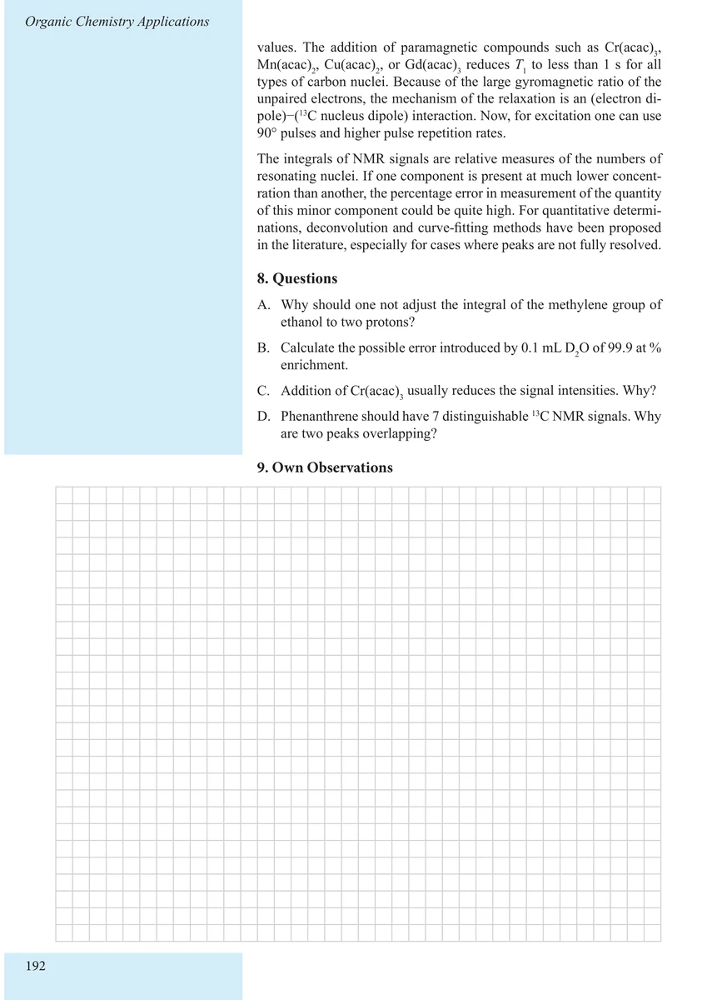

Item 6.4
Quantitative NMR and Relaxation Reagents
定量 NMR 与弛豫试剂
PDF 197–202 · 原书 187–192 · Organic Chemistry Applications






核磁共振实验方法、脉冲序列与谱图实践
Item 6.4
定量 NMR 与弛豫试剂
PDF 197–202 · 原书 187–192 · Organic Chemistry Applications





